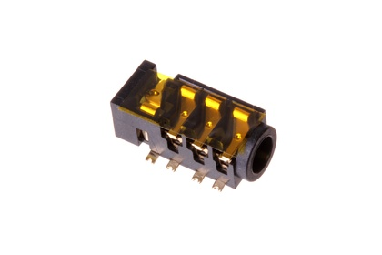
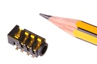
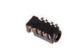

3.5 mm SMD Headphone Socket (4 Pin) - HP34T

Summary
Name: 3.5 mm SMD Headphone Socket (4 Pin)
ID: HEDS-35D-T-SMDS-4P
Hex ID: HP34T
WebPage: https://github.com/oomlout/oomlout-OOMP/wiki/HEDS-35D-T-SMDS-4P
Short URL: http://oom.lt/HP34T
Revision History: https://github.com/oomlout/oomlout-OOMP/blob/master/parts/HEDS-35D-T-SMDS-4P/
| Type |
Size |
Color |
Description |
Index |
HEDS
Headphone Socket |
35D
3.5 mm |
T
|
SMDS
SMD |
4P
(4 Pin) |
Images


About
This part is awaiting a description.
Specifications
| Info |
Value |
| Type |
Headphone Socket |
| Size |
3.5 mm |
| Description |
SMD |
| Index |
(4 Pin) |
Extra Details
Spotted a mistake, want to add more? Let us know oomp@oomlout.com
All images and resources are licensed [CC BY-SA] unless otherwise stated (ie. the datasheets)